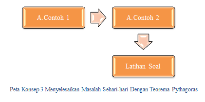
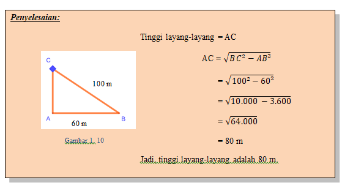
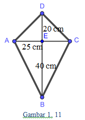
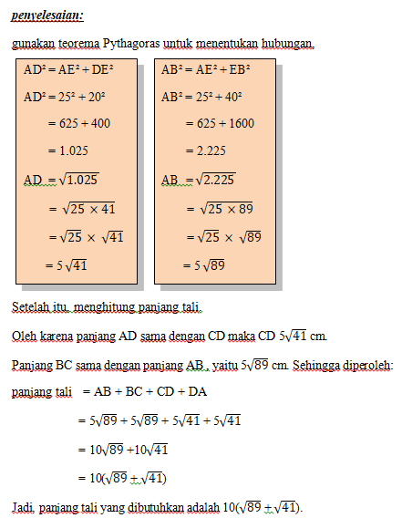
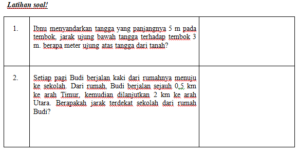

Seorang anak menaikkan layang-layang dengan benang yang panjangnya 100 meter. Jarak anak di tanah dengan titik yang berada dibawah laying-layang adalah 60 meter. Hitunglah ketinggian layang-layang.


Gambar berikut adalah sebuah rangka layang-layang disusun dari dua bilah bambu yang panjangnya 60 cm dan 50 cm. Bilah bambu paling panjang dijadikan rangka tegak. Jika dari tiap ujung-ujung bilah bambu tersebut di hubungkan dengan tali, hitunglah tali yang dibutuhkan (lilitan tali diabaikan).

